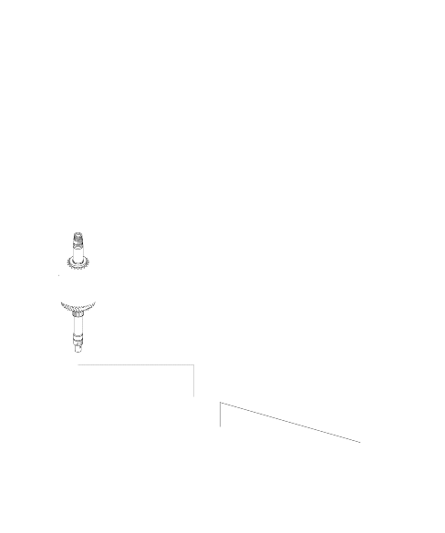

 |
- MAINSHAFT SPEED SENSOR
- MAINSHAFT SPEED SENSOR WASHER
(equipped on SLXA transmission)
- TRANSMISSION HANGER
- TRANSMISSION HOUSING MOUNTING BOLT
10 x 1.25 mm, 44 Nm (4.5 kgf/m, 33 lbf/ft)
- TRANSMISSION HOUSING
- COUNTERSHAFT REVERSE GEAR
- REVERSE GEAR COLLAR
- LOCK WASHER, Replace
- REVERSE SHIFT FORK
- NEEDLE BEARING
- REVERSE SELECTOR
- CONNECTOR BRACKET
- DOWEL PINS
- COUNTERSHAFT SUB-ASSEMBLY
- DIFFERENTIAL ASSEMBLY
- TORQUE CONVERTER HOUSING
- TRANSMISSION HOUSING GASKET, Replace
- MAINSHAFT SUB-ASSEMBLY
- O-RING, Replace
- DOWEL PIN
|